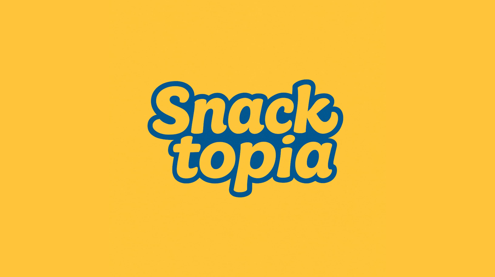
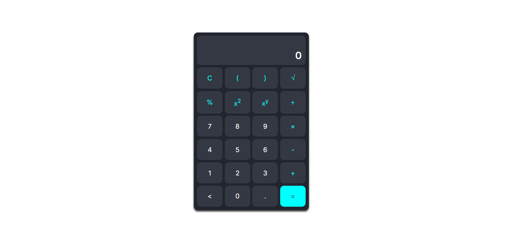
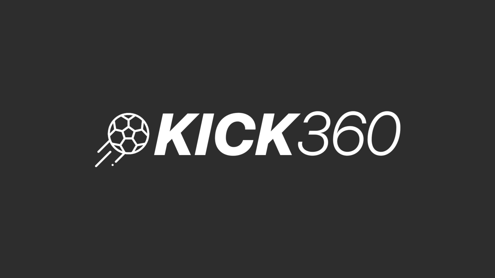

Portofolio

Branding & Visual Snacktopia

Website Desa Waledkota (Proyek PKL)

Aplikasi Kalkulator (HTML, CSS, JS)

Perkenalkan saya Aditya Krisnanda Putra, seorang fresh graduate SMK yang bersemangat dalam manajemen, data, dan digital marketing.
Saat ini sedang menempuh studi S1 Manajemen di Universitas Terbuka Bandung.
Saya Aditya Krisnanda Putra, biasa dipanggil Masdit. Lulusan SMK Negeri 4 Kuningan jurusan PPLG dengan fokus di pemrograman, desain, dan pengelolaan data. Saat ini saya sedang kuliah online di Universitas Terbuka dengan program studi Manajemen.
Saya dikenal sebagai pribadi yang rasional, senang belajar, dan fokus pada efisiensi kerja. Saya aktif membangun portofolio digital, menjajaki dunia freelance, dan terus mengembangkan skill di bidang manajemen data, digital marketing, dan pengembangan personal branding.
English Score Formula – Score: 465
Agustus 2023
Pijar Foundation – April 2025
Pijar Foundation – Mei 2025
PJM Teknologi – Nilai: 97 / 100
April 2025
Pemerintah Desa Waledkota – Desember 2024
SMKN 4 Kuningan – Mei 2025

24 Juni 2025 • Opini Politik

22 Juni 2025 • Personal Branding